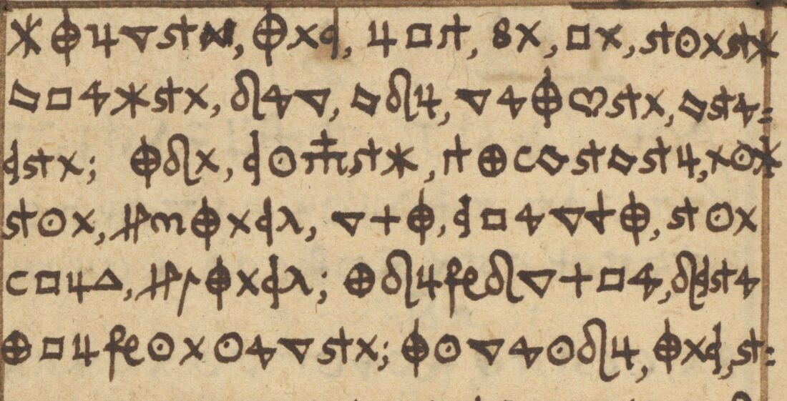

At a glanceKnown key applied · partial (90% of the cipher)
- The manuscript
- Johann Gerlach (Girlach), Occulta scripta chymica, a German alchemical notebook dated 1572–76. The section “Secreta alchemica” (pp.7–178) is written wholly in cipher.
- Where
- London, Wellcome Collection, MS.309 (b19695561), digitised with a Public Domain Mark; Unsolved Catalogue no. 1252 (kept, narrowed to the pages not read). Not on DECODE.
- The cipher
- A simple homophonic substitution: 52 pictorial signs for the letters of German, one to four signs per letter, a comma-like word divider, alchemical pictograms for antimony, Mars, Mercury and Sol. No nulls, no code groups.
- How it was read
- With Julius Kohn’s key, written into the volume at pp.260–261 in 1889 as rows of signs with no letters beside them. Malcolm McBratney, with Claude, set the signs in order as a table of letters (moving three groups one step to fit the text), transcribed the pages sign by sign and decoded them. The key is not recovered here.
- What it says
- Recipes: flowers of sulphur and sulphur sublimed three times as a medicine for lungs and chest; red and white flowers of antimony; the preparations “belonging to the corruption of Sol” (sal ammoniac, spirit of wine, aqua regis).
- Still open
- Pages 20–178 and the rest of six partial pages; 143 doubtful signs; the inserted leaf at pp.11–12 (no scan); damaged lines of pp.9–10.
- Credit
- Key: Julius Kohn (1889). Transcription, decode, reading and translation: Malcolm McBratney, working with Claude and other models (issue #439). The manuscript and its key sheet were listed by the UK libraries sweep of October 2026 (catalogue 1252).
01 The manuscript
Wellcome MS.309 is a notebook of German alchemy and medicine, Occulta scripta chymica, by Johann Gerlach, dated 1572–76 in the catalogue. Pages 7 to 178, the “Secreta alchemica”, are in a sign cipher; pages 179–207 are partly so. The Wellcome catalogue notes that a key by Julius Kohn, dated 1889, is inserted in the volume. The contributor read handwritten pages 7–10 and 13–19 and parts of pages 40, 107, 112, 115, 156 and 177 from the Wellcome IIIF images. Pages 11–12 are a narrow inserted leaf with no scan of its own; page 9 lines 21–25 and two lines of page 10 are damaged.

02 Kohn’s key, and how it was used
The key leaves, pp.260–261 (scans 0265 and 0266), carry rows of sign groups and the date 1889, with no letters written beside them. The contributor took the groups in their order, Z to A, as the letters, and named each sign by its shape (key.tsv: 52 labels, such as STAR = m, PHI = u, TRI = t). Two things were not just read off the sheet, by his own account: Kohn’s u, t and s groups are one step out of line with the values the text needs and were moved; and three figure-4 shapes (open = l, closed with a point = r, modern closed = u) and the triangle on a stem (q) are assigned partly from context, mostly on page 7. So Kohn’s key was applied with re-alignments, not unchanged. The Wellcome catalogue says 51 symbols; the table has 52 labels, and the difference is not reconciled here. Signs of the sheet not yet seen in the text: e (>), x (two), y (two), z (one).
03 The reading
The decoded pages are Early New High German recipes of the technical kind: “Flores sulphuris, das ist sublimirter schwewel; den machet man also … Nemet schonen gelben schwefel … stoset in klein zu pulfer, tut in in eine uiola, goeset drauf gutten scharfen weinessigk” (page 7), sulphur sublimed three times with colcothar and salt as “die aller edleste medicin zur lungen und der gantzen brust” (pages 8–9), with myrrh and asa dulcis in a soft egg against cough and consumption (page 10), and the red and white flowers of antimony, taken in wine and sweated out against fevers (pages 13–14). From page 15 the book turns to gold: how to make “quecksilber aus goldt”, then a numbered sequence “Was zu der coruption solis gehorig ist” (pages 16–19): sal armoniack sublimed six times through sal gemme, spiritus vini from burnt wine and calcined weinstein, and an aqua regis. The openings of later sections, on the stone of the philosophers (p.40), putrefaction in an oak chest (pp.107, 112), the mercury of Sol and Luna (p.115), the arcanum of tartar (p.156) and the oils and juices of herbs (p.177), are read in part. The recipes are given as sixteenth-century evidence only. The decode of the sign transcription, line by line, is in the Full texts; the contributor’s reading and English translation are there too, with the holes in place.
04 How it was counted
One count is used here: of the 1,395 words of the contributor’s reading on the 17 pages and parts, 1,259 carry no doubt mark, bracket or hole (90.3%). A word with a doubtful letter (?), a supplied or restored letter or word, or a gap counts as not read. By page: p.7 93.8%, p.8 89.2%, p.9 77.1%, p.10 77.1%, p.13 92.0%, p.19 94.3%. No page reaches the 95% bar by this count.
The contributor counts differently: signs inside words that give sense, with doubtful signs excluded (“firm”): p.8 92.4%, p.9 80.5%, p.10 86.2%, p.13 96.1%, p.19 95.7%, and 97–99% when “probable” readings are added. On that rule he calls pp.13 and 19 “read”; on the word count above they are not, and his figures are not used elsewhere on this page. His page 8 was transcribed and decoded once with the key frozen (by his record; an external time stamp of his manifest, 11 November 2026 22:41 UTC, is stated in the issue and was not recomputed).
Checks the contributor reports and that were not re-run here because the lists and scripts were not sent: decoded words found in a list of 64,029 sixteenth-century spellings from 116 texts, 77% (p.40) to 96% (p.112) per page, against at most 30% for 1,000 shuffled keys per page; and agreement of independent transcribers sign by sign, 91.6% to 99.6% (“agreement is not accuracy”). Pages 16–18 rest on single readers other than Claude (page 18 on two) and are not rated.
At integration, an own decoder written from the key table reproduced all 348 decoded lines from the sign transcription (6,479 signs, 143 doubtful), and Kohn’s two leaves and the first six lines of page 8 (130 signs) were compared with the Wellcome images and agree. The other pages were not compared with the images.
05 What remains open
- Pages 20–178 and 179–207, and the rest of the six partial pages (p.40 beyond line 9, p.112 beyond line 5 and the remainder of pp.107, 115, 156, 177): not transcribed.
- 143 doubtful signs, 54 of them on page 7, mostly the three figure-4 shapes and the s-signs.
- Page 9 lines 21–25 and two lines of page 10 (damage); the inserted leaf at pp.11–12, with no scan.
- The groups of Kohn’s sheet that the pages read do not use: their values are as the sheet gives them by order, untested.
- The count of 51 or 52 signs; German specialist literature, Kohn’s papers and the Wellcome files were not checked for an earlier reading. This is a reading with an existing key, not a first break.
Full texts
The transcription and the decryption of every document on this page, so that the reading can be used and checked. Short files are shown here; all are in the repository.
Gerlach, Occulta scripta chymica, pp.7-10, 13-19 and parts of pp.40, 107, 112, 115, 156, 177 read in part
Alchemical and medical recipes of a 1570s German notebook: how to make flowers of sulphur and to prepare sublimed sulphur three times with colcothar and salt as a medicine for the lungs and chest (pp.7-10), flowers of antimony red and white, with a fever remedy (pp.13-15), how to make quicksilver out of gold, and the numbered preparations 'belonging to the corruption of Sol': sal ammoniac sublimed through rock salt, spiritus vini from burnt wine and tartar, and aqua regis (pp.16-19); the openings of later sections on the philosopher's stone, putrefaction, the mercury of Sol and Luna and the arcanum of tartar are read in part.
Builds coherent sentences, but under the read bar of 95% of words read as sense (90% here); the holes are marked in the reading.
Transcription: transcription.txt
Decryption
# gerlach1252 decryption: line-by-line decode of the transcription with Kohn's key as set up in key.tsv (the contributor's decoder dec_v2.py; reproduced at integration by an own decoder, 348 of 348 lines identical). # ? after a letter = doubtful sign; # = unknown sign; [...] = untranscribed or damaged. No word is emended here: u/v, i/j not distinguished, no umlauts. ### p.7 (scan 0012) L01: flor?es sul?et?eris L02: das ist subl?imir?ter? sch L03: wewel den machet man al? L04: so L05: in ihesu chr?isti namen L06: nemet schonen gel?ben sc L07: wefel? sol?uir? ir? a?ol?et stos L08: et in kl?ein zu pul?fer? tut L09: in in eine uiol?a goeset L10: dr?auf gutten schar?fen w L11: ein essigk das er? dr?ei fin L12: ger? br?eit dar?uber? gehe L13: ru?h?et in? wol? umb l?aset L14: es uir? und tzantzigc?k L15: stunden dr?af an einer? L16: wer?men stete stehen L17: r?ur?et es tzu weil?en umb L18: dar?nach setzet ein hel?n? L19: dr?af und zeuh den esigda L20: uon her?uber? so r?ein duma L21: gst so benimp?st du den s L22: chewel al?len stanck und L23: gift dar?nach thu?e in in L24: eine hul?tzer?ne scusel? o [REST_OF_WORD_NOT_TRANSCRIBED] ### p.8 (scan 0013) L01: multen? und las in an einem? L02: warmen ort wol truken wer L03: den uon disem schwewel nim? L04: ein pfundt thu dartzu ein L05: halb pfundt colcothar oder L06: calcinirten uitriol und e L07: in halb pfundt rein geflo L08: sen saltz reibe dise drei L09: stuke auf einem stein gar L10: klein und wol untereinander L11: das sie gantz wol uermischet L12: werden thu?e es darnach in ei L13: nen kolben und sublimir den L14: schwefel daruon nach der L15: kunst und widerhole diss L16: a?rbeit bis du tzwe oder L17: mer pfundt sublimirtes L18: schwefels zusamen brin L19: gest dises sublimirte L20: n schwewels nim ein pfunt L21: thu widerumb auf?s neus da L22: rtzu ein halb pfundt col L23: otar und ein halb pfundt L24: rein geflosen saltz r?ei L25: be es und mische es wie zu ### p.9 (scan 0014) L01: uor wol untereinander su L02: blimir den schwewel also L03: tzum ander mol daruon und L04: sihe zu das du im nicht zu L05: heis tust das auch alwege L06: im sublimiren die feuht?e L07: so erstlich steiget wol L08: hin weg komme solchs w?an L09: wol d?urch einen helm gesch? L10: ehen zum dr?iten mal nim L11: uon diesem zwier sublimir L12: ten schwewel ein pfundt tu L13: e wider dartzu ein halb pfun?d L14: colcothar und ein halb pf?u L15: ndt salis gem?me das gantz? L16: rein sei sublimir den sch L17: wewel zum driten mal daru L18: on so ist er bereitet u L19: nd hast also die all?er edle L20: ste medicin zur lun?g?en und L21: der gantzen brus?t d?e?r? [DAMAGED] L22: chen nicht mag gef?und [DAMAGED] L23: werden [DAMAGED] so wie ma? [DAMAGED] L24: [DAMAGED] et ges? [DAMAGED] chet? [DAMAGED] an in L25: nim dises schwew?els d?w?e ### p.10 (scan 0015) L01: lot rothe frische mi?rr?ha L02: ein halb qui?nt ase dul?cis e L03: in halb quint und ein wenigk L04: weisen z?uker candi klein ge L05: sosen reibe w?en schwewel L06: sher klein desgleichen d?ie L07: mirrha und asa und mische es L08: wol durch einander uon de L09: sen? pul?wer ein halb qu?in?t L10: lein tzu einem mal in einem L11: wechen ei des morgens ein L12: genomen desgleichen des L13: abents wen man nimer trin L14: cken wol sollet allen hu L15: sten und heil?et die lunge L16: weret der schwindtsucht m?er? L17: dan man daruon sagen thar L18: ein ander recept L19: nim dises schwewels ein lot L20: rothe frisce mirrha und gu L21: [DAMAGED] n gesosen safa?ran iedes L22: ein halbs quintlein aloes L23: [DAMAGED] p?ati?co ein lot und ein qui L24: ntlein nachs kleine pillu L25: len daraus brauche dersel ### p.13 (scan 0016) L01: s wol umb das thu solang bi L02: s nichts rothes mer durch L03: gehet das also durch den fi L04: ltzhut gangen ist las ste L05: hen und sich setzen und tr L06: euge das rothe pulfer wol L07: abe thue es auf ein treib L08: schirben under ein mufel L09: setze es in ein treib ofen L10: gib im ein gut feur blase L11: im mit einem plasebalck L12: forne zu das der r?auch all L13: er wegck gehet so lange L14: bis die rothen flores sc L15: hon schne weis werden das L16: geschicht in einem tage L17: uon diesen weisen flores L18: z?ehen gersten korner sc L19: wer in einem guten wein ein L20: genomen auf den abent z?w? L21: e stundt nach dem nacht L22: esen und dan zu bette ge L23: reget und wol drau gesch L24: witzet so gehen alle feber? L25: u?nd uil kranckheiten durh L26: den schweis hinwegck ane ### p.14 (scan 0017) L01: stulgangck und brechen L02: fur alle fe L03: bres L04: nim rothe od?er weise fl L05: ores [ANTIMONY] und beis die einen L06: tagck in brantenwein dan L07: treuge sie wieder und g L08: ieb einem sieben gerst L09: en korner schwer ein im L10: rosen zucker einem iu L11: ngen und schwachen fun L12: f gersten korner sc L13: hwer es wirdt im helf L14: en L15: flores anhi L16: monii roht und L17: weis zumachen L18: stos anthimonium klein L19: thu in in einen starc L20: ken sci?rben und setze L21: drei sublimir hutte L22: drauf und setze es in L23: ein windtofen und las L24: drei tage und nacht in L25: gleichen feur stehen ### p.15 (scan 0018) L01: das das anthimonium stet L02: z im flus stehe so drin L03: get der [MARS] durch wegck un L04: d die flores sublimiren L05: sich auf im untersten s L06: eint sie grae und schw L07: artz im andern seint sie L08: weis im dritten und ober L09: sten seint sie schon ro L10: ht L11: wie man den me L12: rcurium sol L13: is machen sol L14: das ist wie man au L15: s goldt sol quec L16: ksilber machen L17: im namen unser L18: s herren und hei L19: lants ihesu ch L20: risti amen L21: [MERCURY] [SOL] maria ### p.16 (scan 0019) L01: was zu der coru L02: ption solis L03: gehorig ist L04: erstlich soltu nemen L05: sal armoniack den solt L06: u sublimiren durch das L07: sal gemme sechs mall L08: allemal so schwer sal L09: gemme als das sal armo L10: niack wieget wen diese L11: sechs sublimationes ge L12: sche?hen sindt so sublimi L13: ret d?e?n sal armoniack du L14: rch sich selbt alleine L15: so wirdt er also subtil L16: das er sich auch an der l L17: uft soluiret und so ge L18: lbe als keine blume w?ac L19: hsen kan #an n?u?r? solches L20: geschehen so sublimir in L21: noch ein mol one saltz al L22: leine per se so ist er be L23: reitet zu dieser erbeit L24: zum andern mach einen ### p.17 (scan 0020) L01: gutten starcken brante L02: n wein uon den allerstark L03: isten wein so du haben ma L04: gst disen starcken ge L05: branten wein rectifici?r L06: und distilir das auch uon L07: tzwelf masen kaum ein L08: mas bleibe in suma so st L09: arck dir muglich ist so L10: lchen brantenwein zumach L11: en durchdiedistilation L12: welches dan uon etzlichen L13: alchimisten quinta esen L14: tia genenn?et wirt wen nun L15: solcher fertig wie oben L16: erzelet so thu im also L17: nim obgemelten starcke L18: n brantewein und w?ige in L19: wie schwer er wiget geu L20: s in dan in eine starcke L21: uiola die uon u?enedische L22: m glase gemachet sei u L23: nd merck das zwei teil an L24: der uiola muesen ledigck L25: sein zu diesen obgemel L26: ten brantewein thu den ### p.18 (scan 0021) L01: uirten teil weis und cal L02: cinirten weinstein welch L03: er noch der caltination L04: geflosen hot und feuri L05: ge natur an im hot als den L06: wen nun der uirte theil L07: das ist auf ein pfundt b L08: rantewein kompt acht lo L09: t gemeltes weinsteines L10: in gemeltem brantewein L11: ist so schleus die uiola L12: mit dem sigillo hermet L13: is auf fleisigste zu un L14: d set?ze es ein? zu putri L15: fici?ren in ein balneum L16: roris ober in fimo philo L17: sophico tzwelf tage al L18: s den nach diesen tzwelf L19: tagen so mache die uio L20: la auf und geus branten L21: wein uon der schwartzen L22: hinderselligen residentz? L23: und thue fein behende die L24: schwartze residentz in L25: ein leines secklein das L26: fein rein austreufet als ### p.19 (scan 0022) L01: den thue den brantenwe L02: in wider in die uiola und th L03: ue wider frischen weinst L04: ein wie am ersten darz?u und L05: handel aller gestalt wie L06: mit dem ersten und solch L07: es muess? drei mal gesche L08: hen so ist der spiritus L09: uini gerecht zu der cor L10: uption solis [ET] L11: zum driten mache ein aqu L12: a fort uon einem teil ge L13: lben calcinirten uitri L14: ol und ein teil salniter L15: so schwer nun das waser L16: wiget thue den uirten L17: teil das ist auf ein pfu L18: ndt wasers acht lot uom L19: uolgemelten almoniack L20: saltz? darz?u der wie obge L21: melt durch das sal gemme L22: sublimiret ist worden L23: so ist dis aqua regis L24: zu dieser erbeit auch f L25: ertigck [ET] ### p.40 (scan 0043) L01: dieweill ich mir furgenomen L02: habe die [Practicam] de lapide bene L03: dicto philosophorum souil L04: sichs leiden will und uoran L05: twort werden magck? zubesch? L06: reiben und zuentdeck?en domit L07: ire parobolen und figurlic L08: he wort mogen uerstanden L09: werden wirt im e?an ieder zur ### p.107 (scan 0100) L01: in ihesu christi L02: namen folget alh L03: ir eine ware aus L04: legunge uber das L05: alles so zuuor ge L06: schriben ist und we L07: il das fornemeste L08: in diser kunst die L09: putrefaction ist L10: so wil ich sie im L11: rechtem grunde be L12: schreiben L13: las dir einen kasten u L14: on eichenem holtze mach L15: en zehen schu l?angk und L16: funf schu hoch und breit L17: las den kasten in der mi L18: tte uon einander mit ei L19: nem brete teilen also L20: das aus dem einen kas L21: ten tzwen unterschidli ### p.112 (scan 0105) L01: anderthal?be tage das ist L02: al?le sechs u?nd dr?eisid?e? L03: stu?nden das glas aus dem L04: einen kasten und setzet es L05: in den andern kasten u?nd ### p.115 (scan 0108) L01: wie man all me L02: tal durch das que L03: cksilbe so fl?us L04: sigck wie ein wa L05: chs machen soll L06: mercurius solis L07: et lune L08: in dem namen der heili L09: gen hochgelobten dreifa L10: ltigckeit got uater L11: got son got heiliger L12: geist amen nemet uitr L13: ill ein pfundt oder a L14: chte calciniret den ### p.156 (scan 0149) L01: wie man den me L02: rcurium solis L03: durch das arc L04: anum philosoph L05: orum sublimir L06: en soll [BAMD] L07: arcanum tartari L08: oder philosophorum ist L09: weinstein saltz das so L10: llet ir also machen ### p.177 (scan 0182) L01: [INITIAL] wen ir euer olea durch L02: das instrument wie ir wi L03: set gemacht habet so tut L04: sie mit sampt dem waser L05: in eine uerschlosene ui L06: ola und putrificiret sie L07: uirtzehen tage so werden L08: sie uil subtiler darnach L09: so scheidet das oel uom L10: waser in einem solchem ge L11: lase wie hir gemalet ist L12: uon allen kreu L13: tern einen saft L14: zumachen L15: zurstoset die kreuter L16: glein tut sie in einen ko L17: lben gisen waser drau?f und
Reading
# gerlach1252 reading: Johann Gerlach, Occulta scripta chymica (Wellcome MS.309), the contributor's reading of each page in Early New High German # By the contributor (Malcolm McBratney with Claude, issue #439), as sent. [..] = emendation, supplied or restored letters or words ([hole] marks a gap in the decode); ? = doubtful; [...] = untranscribed or damaged. Spelling is the decode's (u/v, i/j not distinguished). Page status lines are his, before the integration check. Status: **read in part**, honestly labelled per page below. The key is Julius Kohn's (1889). Holes are marked in place; "?" after a letter marks a doubtful sign. **Structure found in pp.15-19:** from p.15 the book turns from medicines (sulphur, antimony) to gold. Pages 16-19 are a numbered sequence headed "Was zu der coruption solis gehorig ist" (what belongs to the corruption of Sol). The section numbers and folio references are written in ordinary script in the margin: **1. sal armoniack (fol. 124)**, **2. spiritus vini / quinta essentia (fol. 125)**, **3. aqua regis (fol. 137)**. Where those folio references point in the book has not yet been checked. Historical text only: the recipes are given as 16th-century evidence, with no modern equivalents. ### p.7 (scan 0012): read in part (key-development page; 4-shapes partly context-assigned) Flores sul[ph]eris?, das ist sublimirter schwewel; den machet man also. In Ihesu Christi namen. Nemet schonen gelben schwefel, souil ir wolet?, stoset in klein zu pulfer, tut in in eine uiola, goeset drauf gutten scharfen weinessigk, das er drei finger breit daruber gehe; ruhet? [ruret?] in wol umb, laset es uir und tzantzigck stunden drauf an einer wermen stete stehen, ruret es tzu weilen umb. Darnach setzet einen hel[m]? drauf und zeuh den esig dauon heruber, so rein du magst; so benimpst du dem schwewel allen stanck und gift. Darnach thue in in eine hultzerne scusel o[der ...] ### p.8 (scan 0013): read on probable readings (firm 489/529 = 92.4%, probable 522/529 = 98.7%); blind control [...schüssel oder] multen?, und las in an einem? warmen ort wol truken werden. Von disem schwewel nim? ein pfundt, thu dartzu ein halb pfundt colcothar oder calcinirten uitriol und ein halb pfundt rein geflosen saltz. Reibe dise drei stuke auf einem stein gar klein und wol untereinander, das sie gantz wol uermischet werden. Thue? es darnach in einen kolben und sublimir den schwefel daruon nach der kunst, und widerhole diss arbeit?, bis du tzwe oder mer pfundt sublimirtes schwefels zusamen bringest. Dises sublimirten schwewels nim ein pfunt, thu widerumb aufs? neus dartzu ein halb pfundt [colotar] [= colcothar, one sign missing] und ein halb pfundt rein geflosen saltz, rei?be es und mische es wie zu[vor ...] (continues p.9) ### p.9 (scan 0014): read on probable readings (firm 405/503 = 80.5%, probable 489/503 = 97.2%); foot of page stained [wie zu]uor wol untereinander; sublimir den schwewel also tzum ander mol daruon, und sihe zu, das du im nicht zu heis tust, das auch alwege im sublimiren die feuhte?, so erstlich steiget, wol hinweg komme. Solchs [wan] [kan?] wol d?urch einen helm geschehen. Zum dr?iten mal nim uon diesem zwier sublimirten schwewel ein pfundt, tue wider dartzu ein halb pfun?d colcothar und ein halb pf?undt salis gem?me, das gantz? rein sei; sublimir den schwewel zum driten mal daruon, so ist er bereitet, und hast also die all?er edleste medicin zur lun?g?en und der gantzen brus?t, d?e?r? […stain…] chen nicht mag ge[f]und [gesund?] […] werden […] so wie ma[n] […] […]et ges[…]chet […] an in. Nim dises schwew?els [dwe] (continues p.10) ### p.10 (scan 0015): read on probable readings (firm 461/535 = 86.2%, probable 521/535 = 97.4%) [... ein] lot, rothe frische mi?rr?ha ein halb qui?nt, [ase] [asa] dul?cis ein halb quint und ein wenigk weisen z?uker candi, klein gesosen [gestossen?]. Reibe [w?en] [den?] schwewel sher klein, desgleichen d?ie mirrha und asa, und mische es wol durch einander. Uon desen? pul?wer ein halb qu?in?tlein tzu einem mal in einem wechen [weichen] ei des morgens eingenomen, desgleichen des abents, wen man nimer trincken wol, sollet [stillet?] allen husten und heil?et die lunge, weret der schwindtsucht, m?er? dan man daruon sagen thar. Ein ander recept. Nim dises schwewels ein lot, rothe frisce mirrha und gu[hole]n gesosen safa?ran, iedes ein halbs quintlein, aloes [hole] p?ati?co [epatico] ein lot und ein quintlein; [nachs] [machs?] kleine pillulen daraus, brauche dersel[ben ...] (continues on the inserted leaf, pp.11-12, not scanned) ### p.13 (scan 0016): read (firm 515/536 = 96.1%) [...]s wol umb, das thu so lang, bis nichts rothes mer durch gehet. Das also durch den filtzhut gangen ist, las stehen und sich setzen, und treuge das rothe pulfer wol abe. Thue es auf ein treib schirben unter ein mufel, setze es in ein treib ofen, gib im ein gut feur, blase im mit einem plasebalck forne zu, das der r?auch aller wegck gehet, so lange bis die rothen flores schon schne weis werden; das geschicht in einem tage. Uon diesen weisen flores z?ehen gersten korner scwer in einem guten wein eingenomen auf den abent, z?w?e stundt nach dem nachtesen, und dan zu bette gereget [geleget?] und wol drau[f] geschwitzet, so gehen alle feber? u?nd uil kranckheiten durh den schweis hinwegck, ane [...] (continues p.14) ### p.14 (scan 0017): read in part (not rated) [... ane] stulgangck und brechen. Fur alle febres. Nim rothe od?er weise flores [Antimon-Zeichen] und beis die einen tagck in brantenwein, dan treuge sie wieder und gieb einem sieben gersten korner schwer ein im rosen zucker, einem iungen und schwachen funf gersten korner schwer; es wirdt im helfen. Flores anthimonii roht und weis zumachen. Stos anthimonium klein, thu in in einen starcken sci?rben und setze drei sublimir hutte drauf, und setze es in ein windtofen und las drei tage und nacht in gleichen feur stehen, ### p.15 (scan 0018): read in part (not rated) das das anthimonium stetz im flus stehe; so dringet der [Mars-Zeichen] durch wegck, und die flores sublimiren sich auf: im untersten seint sie grae und schwartz, im andern seint sie weis, im dritten und obersten seint sie schon roht. Wie man den mercurium solis machen sol, das ist, wie man aus goldt sol quecksilber machen. Im namen unsers herren und heilants Ihesu Christi, amen. [Merkur-Zeichen] [Sonnen-Zeichen] Maria. ### p.16 (scan 0019): read in part (single reader, Gemini 4 Argon; not rated) Was zu der coruption solis gehorig ist. Erstlich soltu nemen sal armoniack; den soltu sublimiren durch das sal gemme sechs mall, allemal so schwer sal gemme als das sal armoniack wieget. Wen diese sechs sublimationes gesche?hen sindt, so sublimiret d?e?n sal armoniack durch sich selbt alleine; so wirdt er also subtil, das er sich auch an der luft soluiret, und so gelbe als keine blume w?achsen kan. [?]an n?u?r? solches geschehen, so sublimir in noch ein mol one saltz alleine per se; so ist er bereitet zu dieser erbeit. Zum andern mach einen [...] ### p.17 (scan 0020): read in part (single reader, GPT-6 Astra; not rated) gutten starcken branten wein uon den allerstarckisten wein, so du haben magst. Disen starcken gebranten wein rectifici?r und distilir, das auch uon tzwelf masen kaum ein mas bleibe; in suma so starck dir muglich ist, solchen brantenwein zumachen durch die distilation, welches dan uon etzlichen alchimisten quinta esentia genenn?et wirt. Wen nun solcher fertig, wie oben erzelet, so thu im also: nim obgemelten starcken brantewein und w?ige in, wie schwer er wiget; geus in dan in eine starcke uiola, die uon u?enedischem glase gemachet sei, und merck, das zwei teil an der uiola muesen ledigck sein. Zu diesen obgemelten brantewein thu den [...] ### p.18 (scan 0021): read in part (two readers, adjudicated; not rated) uirten teil weis und calcinirten weinstein, welcher noch der caltination geflosen hot und feurige natur an im hot; als den, wen nun der uirte theil (das ist auf ein pfundt brantewein kompt acht lot gemeltes weinsteines) in gemeltem brantewein ist, so schleus die uiola mit dem sigillo hermetis auf fleisigste zu, und setze? es ein? zu putrifici?ren in ein balneum roris ober in fimo philosophico tzwelf tage. Als den nach diesen tzwelf tagen so mache die uiola auf und geus brantenwein uon der schwartzen hinderselligen residentz?, und thue fein behende die schwartze residentz in ein leines secklein, das fein rein austreufet, als [...] ### p.19 (scan 0022): read (firm 450/470 = 95.7%); single reader [...] den thue den branten wein wider in die uiola, und thue wider frischen weinstein, wie am ersten, darz?u, und handel aller gestalt wie mit dem ersten, und solches muess? drei mal geschehen; so ist der spiritus uini gerecht zu der coruption solis. &c. [margin, ordinary script: 3 fol:137] Zum driten: mache ein aqua fort uon einem teil gelben calcinirten uitriol und ein teil salniter. So schwer nun das waser wiget, thue den uirten teil, das ist auf ein pfundt wasers acht lot, uom uolgemelten almoniack saltz? darz?u, der wie obgemelt durch das sal gemme sublimiret ist worden; so ist dis aqua regis zu dieser erbeit auch fertigck. &c. ### p.40 (scan 0043): read in part (lines 1-9 of 30) Dieweill ich mir furgenomen habe, die [Practicam] de lapide benedicto philosophorum, souil sichs leiden will und uorantwortet werden magck?, zubesch?reiben und zuentdeck?en, domit ire parabolen und figurliche wort mogen uerstanden werden, wirt im e?an ieder zur [...] (lines 1-9 of 30 only) ### p.107 (scan 0100): read in part In Ihesu Christi namen folget alhir eine ware auslegunge uber das alles, so zuuor geschriben ist; und weil das fornemeste in diser kunst die putrefaction ist, so wil ich sie im rechtem grunde beschreiben. Las dir einen kasten uon eichenem holtze machen, zehen schu l?angk und funf schu hoch und breit; las den kasten in der mitte uon einander mit einem brete teilen, also das aus dem einen kasten tzwen unterschidli[che ...] ### p.112 (scan 0105): read in part (lines 1-5) anderthal?be tage, das ist al?le sechs u?nd dr?eisi[g]? stu?nden, das glas aus dem einen kasten und setzet es in den andern kasten u?nd [...] (lines 1-5 only) ### p.115 (scan 0108): read in part Wie man all metal durch das quecksilbe[r] so fl?ussigck wie ein wachs machen soll. Mercurius solis et lune. In dem namen der heiligen hochgelobten dreifaltigckeit, got uater, got son, got heiliger geist, amen. Nemet uitrill ein pfundt oder achte, calciniret den [...] ### p.156 (scan 0149): read in part Wie man den mercurium solis durch das arcanum philosophorum sublimiren soll [Zeichen]. Arcanum tartari oder philosophorum ist weinstein saltz, das sollet ir also machen [...] ### p.177 (scan 0182): read in part [Initiale] Wen ir euer olea durch das instrument, wie ir wiset, gemacht habet, so tut sie mit sampt dem waser in eine uerschlosene uiola und putrificiret sie uirtzehen tage, so werden sie uil subtiler. Darnach so scheidet das oel uom waser in einem solchem gelase, wie hir gemalet ist. Uon allen kreutern einen saft zumachen. Zurstoset die kreuter glein, tut sie in einen kolben, gisen waser drau?f und [...]
Translation
# gerlach1252 translation into English, by the contributor (issue #439), as sent. Historical text only: the recipes are given as 16th-century evidence, with no modern equivalents. Status: **read in part**, honestly labelled per page below. The key is Julius Kohn's (1889). Holes are marked in place; "?" after a letter marks a doubtful sign. **Structure found in pp.15-19:** from p.15 the book turns from medicines (sulphur, antimony) to gold. Pages 16-19 are a numbered sequence headed "Was zu der coruption solis gehorig ist" (what belongs to the corruption of Sol). The section numbers and folio references are written in ordinary script in the margin: **1. sal armoniack (fol. 124)**, **2. spiritus vini / quinta essentia (fol. 125)**, **3. aqua regis (fol. 137)**. Where those folio references point in the book has not yet been checked. Historical text only: the recipes are given as 16th-century evidence, with no modern equivalents. ### p.7 (scan 0012): read in part (key-development page; 4-shapes partly context-assigned) Flores sulphuris [flowers of sulphur?], that is, sublimed sulphur; it is made thus. In the name of Jesus Christ. Take fine yellow sulphur, as much as you wish, pound it small to powder, put it into a viola, pour on it good sharp wine-vinegar so that it stands three fingers' breadth above it; stir it well about, and let it stand on it for four-and-twenty hours in a warm place, stirring it now and then. Then set a helm on it and draw the vinegar off over it, as clean as you can; so you take from the sulphur all its stench and poison. Then put it into a wooden bowl or [trough ...] (continues p.8) ### p.8 (scan 0013): read on probable readings (firm 489/529 = 92.4%, probable 522/529 = 98.7%); blind control [... a bowl or] trough, and let it become thoroughly dry in a warm place. Of this sulphur take one pound; add to it half a pound of colcothar or calcined vitriol, and half a pound of pure fused salt. Grind these three things very small on a stone and well together, so that they are thoroughly mixed. Then put it into a cucurbit and sublime the sulphur from it according to the art; and repeat this work until you bring together two or more pounds of sublimed sulphur. Of this sublimed sulphur take one pound; add to it again, anew, half a pound of colcothar and half a pound of pure fused salt; grind it and mix it as [before ...] ### p.9 (scan 0014): read on probable readings (firm 405/503 = 80.5%, probable 489/503 = 97.2%); foot of page stained [... as be]fore, well together; sublime the sulphur from it thus for the second time, and take care that you do not make it too hot, so that in subliming the moisture, which rises at the start, always goes well away. This [can?] well be done through a helm. For the third time take of this twice-sublimed sulphur one pound; add to it again half a pound of colcothar and half a pound of sal gemmae (rock salt), which must be quite pure; sublime the sulphur from it for the third time; then it is prepared, and so you have the very noblest medicine for the lungs and the whole chest, [... stain ...] cannot [become] healthy [... stain ...] as one [...] [... stain ...] in. Take of this sulphur [...] (continues p.10) ### p.10 (scan 0015): read on probable readings (firm 461/535 = 86.2%, probable 521/535 = 97.4%) [... one] lot; fresh red myrrh, half a quint; asa dulcis, half a quint; and a little white sugar candy, pounded small. Grind the sulphur very small, likewise the myrrh and the asa, and mix it well together. Of this powder, half a quintlein at a time, taken in a soft egg in the morning, and likewise in the evening when one will drink no more, [stills?] every cough and heals the lungs, wards off consumption, more than one dares say of it. Another recipe. Take of this sulphur one lot; fresh red myrrh and good(?) [...] pounded saffron, each half a quintlein; aloes [he]patica, one lot and one quintlein; [make?] small pills from it; use the same [...] ### p.13 (scan 0016): read (firm 515/536 = 96.1%) [... stir i]t well round; do this until nothing red passes through any more. What has thus gone through the felt hat [filter], let it stand and settle, and dry(?) the red powder off well. Put it on a cupel-dish under a muffle, set it in a refining furnace, give it a good fire, blow on it from the front with a bellows so that all the smoke goes away, until the red flores become quite snow-white; that happens in one day. Of these white flores, ten barleycorns' weight taken in a good wine in the evening, two hours after supper, and then [laid] to bed and sweated well on it: so all fevers and many illnesses go away through the sweat, without [...] ### p.14 (scan 0017): read in part (not rated) [... without] stool and vomiting. For all fevers. Take red or white flores [antimony sign] and steep them for a day in brandy-wine, then dry them again and give a person seven barleycorns' weight of them in rose sugar, a young and weak person five barleycorns' weight; it will help him. To make flores of antimony red and white. Pound antimonium small, put it in a strong sherd and set three subliming-hats on it, set it in a wind-furnace and let it stand three days and nights in an even fire, ### p.15 (scan 0018): read in part (not rated) so that the antimonium always stands in flux; then the [Mars sign] passes away through it, and the flores sublime upwards: in the lowest [hat] they are grey and black, in the second they are white, in the third and uppermost they are beautifully red. How one shall make the mercurius solis, that is, how one shall make quicksilver out of gold. In the name of our Lord and Saviour Jesus Christ, amen. [Mercury sign] [Sun sign] Maria. ### p.16 (scan 0019): read in part (single reader, Gemini 4 Argon; not rated) What belongs to the corruption of Sol (coruption solis). To begin, you shall take sal armoniack; you shall sublime it through the sal gemme six times, each time as much sal gemme by weight as the sal armoniack weighs. When these six sublimations have been done, then sublime the sal armoniack through itself alone; then it becomes so subtle that it dissolves even in the air, and as yellow as no flower can grow. [When?] this has now been done, sublime it once more without salt, alone, per se; then it is prepared for this work. Secondly, make a [...] ### p.17 (scan 0020): read in part (single reader, GPT-6 Astra; not rated) good strong burnt wine from the very strongest wine you can have. Rectify and distil this strong burnt wine, so that of twelve measures scarcely one measure remains; in sum, as strong as it is possible for you to make such brandy-wine by distillation, which some alchemists call quinta essentia. When this is ready, as told above, do thus with it: take the aforesaid strong brandy-wine and weigh it, how heavy it weighs; then pour it into a strong viola made of [Venetian?] glass, and note that two parts of the viola must remain empty. To this aforesaid brandy-wine add the [...] ### p.18 (scan 0021): read in part (two readers, adjudicated; not rated) fourth part of white and calcined wine-stone, which after the calcination has flowed and has a fiery nature in it. Then, when the fourth part (that is, to one pound of brandy-wine come eight lot of the said wine-stone) is in the said brandy-wine, close the viola most carefully with the sigillum Hermetis, and set it to putrefy in a balneum roris [or?] in fimo philosophico for twelve days. Then, after these twelve days, open the viola and pour the brandy-wine off the black residue left behind, and quickly put the black residue into a [linen?] little bag that [drips out?] fine and clean, as [...] ### p.19 (scan 0022): read (firm 450/470 = 95.7%); single reader [...] then put the burnt wine back into the viola, and add fresh wine-stone (weinstein) again, as at the start, and handle it in every way as with the earlier one; and this must be done three times. Then the spiritus vini is right for the corruption of Sol (coruption solis). &c. [margin: 3, fol. 137] Thirdly: make an aqua fort from one part of yellow calcined vitriol and one part of salniter. As much as the water then weighs, add a fourth part of it (that is, to one pound of water, eight lot) of the aforesaid almoniack salt, which has been sublimed through the sal gemme as described above. Then this aqua regis is also ready for this work. &c. ### p.40 (scan 0043): read in part (lines 1-9 of 30) Since I have undertaken to describe and uncover the Practica de lapide benedicto philosophorum [the practice of the blessed stone of the philosophers], as far as it may be borne and answered for, so that their parables and figurative words may be understood, [...] every one [...] (lines 1-9 of 30 only) ### p.107 (scan 0100): read in part In the name of Jesus Christ there follows here a true exposition of all that has been written before; and because the foremost thing in this art is putrefaction, I will describe it on its true ground. Have a chest made of oak wood, ten shoes long and five shoes high and wide; have the chest divided in the middle by a board, so that out of the one chest [there are] two separate [...] ### p.112 (scan 0105): read in part (lines 1-5) one and a half days, that is, every six-and-thirty hours, [take] the glass out of the one chest and set it in the other chest and [...] (lines 1-5 only) ### p.115 (scan 0108): read in part How one shall make all metal as flowing as wax through quicksilver. Mercurius solis et lunae [the mercury of Sol and Luna]. In the name of the holy, highly praised Trinity, God the Father, God the Son, God the Holy Ghost, amen. Take vitriol, one pound or eight[?], calcine it [...] ### p.156 (scan 0149): read in part How one shall sublime the mercurius solis through the arcanum philosophorum [sign]. The arcanum tartari or philosophorum is salt of wine-stone; you shall make it thus [...] ### p.177 (scan 0182): read in part When you have made your oils through the instrument, as you know, put them together with the water into a closed viola and putrefy them fourteen days; so they become much more subtle. Then separate the oil from the water in such a glass as is painted here. To make a juice from all herbs. Pound the herbs small, put them into a cucurbit, pour water on it and [...]
Key: key.tsv
06 Sources
- Images: Wellcome Collection MS.309 (b19695561),
iiif.wellcomecollection.org/presentation/b19695561, scans 0012–0022 (pp.7–19), 0043, 0100, 0105, 0108, 0149, 0182 and the key leaves 0265–0266; catalogue:wellcomecollection.org/works/qb3carav. - Contributor’s issue #439 (Malcolm McBratney, working with Claude; GPT-6 Astra and Sol and Gemini 4 Argon for the first passes of pp.16–18 and independent passes of pp.8–10 and 13).
- Key: Julius Kohn, 1889, in the volume, pp.260–261.
Files: targets/gerlach1252/.
Cite this page
Malcolm McBratney and Daniel Bourdeau, “Johann Gerlach, Occulta scripta chymica (Wellcome MS.309), 1572–76”, Cyphersolver, posted 12 November 2026, https://cyphersolver.com/gerlach1252.html.